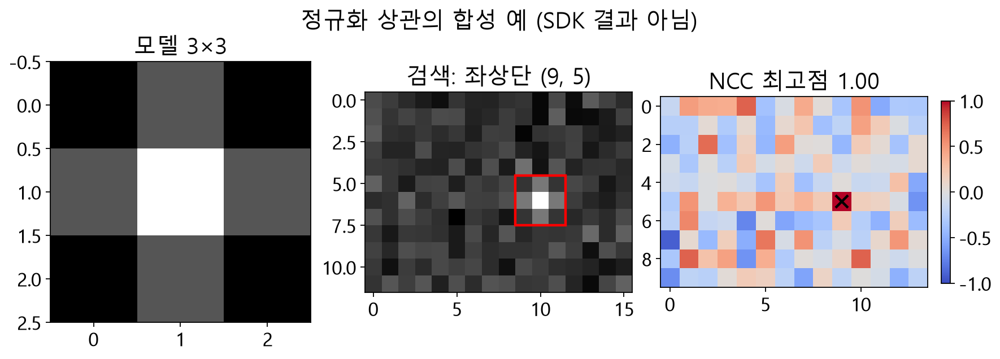

정규화 상관으로 포즈 찾기
선택 템플릿 값 T와 후보 패치 I의 평균을 각각 빼고 Σ((T−T̄)(I−Ī)) / √(Σ(T−T̄)² Σ(I−Ī)²)를 계산합니다. 분산이 있는 동일 패턴은 1에 가깝고, 밝기 오프셋과 양의 일정 배율에 둔감합니다. 음의 상관은 음수이지만 기본 검색의 점수 하한은 0 이상이므로 음의 점수는 선택할 수 없습니다. 점수는 확률이 아닙니다. 검색 패치의 분산이 0이면 그 후보는 점수가 없어 건너뜁니다.

판독 기준
- (9,5) 위치 점수는 1입니다.
- 상수 패치는 분모가 0이 될 수 있으며 점수는 확률이 아닙니다.
평균을 제거한 모델과 영상 패치의 정규화 내적으로 계산한 합성 예입니다. NumPy 수학 예이며 SDK 매칭 결과의 좌표 체계, 탐색 설정이나 점수 보정까지 재현한 결과는 아닙니다.
적용 상황과 원리
상관을 구하기 전에 모델과 후보의 선택 표본에서 각각 평균을 뺍니다. 평균을 뺀 두 값 집합의 곱을 합하고 두 집합의 제곱합으로 나누면 패턴의 상대적인 밝기 변화를 비교할 수 있습니다. 동일한 비상수 패턴의 점수는 1에 가깝고, 일정한 밝기 오프셋이나 양의 배율은 중심화와 정규화에서 상쇄됩니다. 그렇다고 점수가 물체 존재 확률을 나타내지는 않습니다.
결과를 읽는 방법
이 원리는 양쪽 표본에 밝기 변화가 있어야 성립합니다. 선택된 템플릿이 상수면 학습할 수 없고 검색 패치가 일정하면 그 후보에는 점수가 없어 제외됩니다. 마스크를 바꾸면 평균과 분모를 계산하는 선택 집합도 달라집니다. 조명으로 인해 영역마다 서로 다른 변화가 생기거나 물체가 가려질 때 점수가 어떻게 바뀌는지는 실제 데이터로 확인해야 합니다. 음의 상관은 계산될 수 있지만 기본 최소 점수의 유효 범위는 0 이상입니다.
추가 점검
상관 분모는 모델과 후보에서 각각 계산한 중심화 벡터의 크기입니다. 한쪽이라도 크기가 0이면 나눗셈이 정의되지 않습니다. 선택 표본의 수만으로 분산이 있다고 판단할 수 없기 때문에 값이 실제로 서로 다른지도 확인합니다.
분산과 점수의 해석
| 조건 | 확인할 내용 |
|---|---|
| 학습 선택점 모두 같음 | 정규화 분모를 만들 수 없어 학습 오류 |
| 검색 패치가 일정함 | 그 후보의 유효 상관을 만들지 못해 제외 |
| 동일한 비상수 패턴 | 정규화 상관은 수치 오차 범위에서 1 |